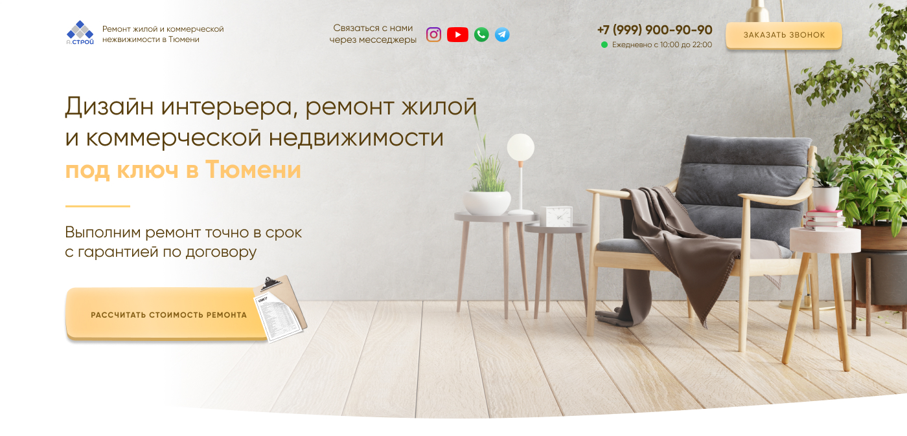
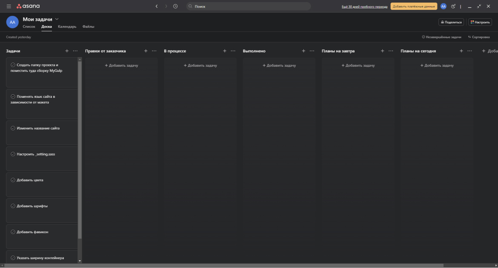
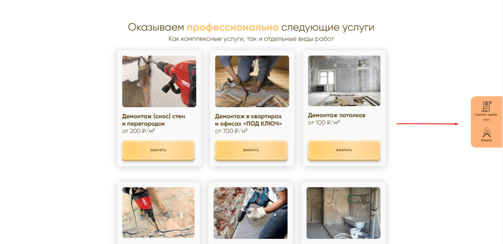
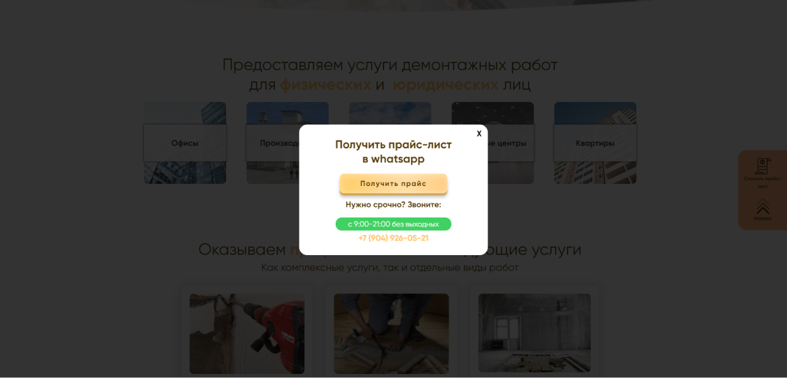

Кейс по подбору макета, его доработке и разработке сайта на тему демонтажа
Введение
Ко мне обратился заказчик с просьбой разработать сайт на тему "Демонтаж". Макет у заказчика отсутствовал, но был скриншот готового сайта который он хотел.
Информация о проекте
- Минимальное ТЗ (Техническое задание)
- Отсутствие макета
- Приблизительное время разработки: 4 дня
Подготовка перед взятием заказа
Перед началом разработки я решил предложить заказчику найти макет в связи с проблематичностью определения шрифтов, цветов, размеров элементов и прочего по картинке, на что заказчик дал своё добро. Через минут 20 я предложил заказчику несколько вариантов макетов из которых он выбрал следующий и согласился его доработать под тему "Демонтаж".
 Ссылка на макетДалее я обсудил с заказиком что лучше на сайте удалить/изменить/добавить, получил несколько пожеланий и правок. Данную информацию очень важно получить перед началом выполнения заказа. После чего занёс всю информацию в доску Asana.
Проблема возникшая на стадии подготовки
Заказчик сообщил, что дизайнер готовивший логотип и фавикон для сайта пропал и уже долгое время не выходит на связь. Поэтому, мною было принято решение начать заказ заранее, чтобы не заставлять заказчика ждать ещё большее время из-за ошибки дизайнера.
Этапы выполнения
1 этап: Доработка макета под тему "Демонтаж"
Все текста были заменены уже после доработки макета во время разработки сайта. Следуя пожеланиям заказчика были внесены следующие изменения в макет:
- 1В шапке сайта удалена иконка инстаграмма и время работы.
- 2В главном блоке был заменён фон.
- 3Второй блок был переделан на тему мест, где компания проводит демонтаж.
- 4В третьем блоке с карточками услуг были полностью заменены изображения и вырезаны их описания с добавлением новых карточек
- 5Блоки с калькулятором, материалами и "Почему нам доверяют?" были удалёны
- 6Блок с формой было решено удалить и оставить только модальное окно с формой
- 7Были добавлены блоки со слайдерами с примерами работ и отзывами
- 8Был добавлен простенький подвал
2 этап: Подготовка к разработке
Прежде чем приступить к разработке сайта, необходимо создать репозиторий на GitHub, подготовить и скачать все исходники: шрифты, картинки. После подготовки исходников необходимо сделать первичную настройку: записать цвета в переменные, определить отступы контейнера, добавить заголовок странице.
Первичная настройка проекта у меня занимает не более 5 минут благодаря отличной сборке Gulp и моим наработкам. Также благодаря данной сборке разработка сайта ускоряется в разы.
3 этап: Разработка сайта
В основном была стандартная работа верстальщика - вёрстка простых блоков, но примерно на разработке подвала заказчик попросил добавить справа фиксированный блок с кнопками "скачать прайс-лист" при нажатии на которую вызывается модальное окно с кнопкой нажав на которую пользователь переходит в whatsapp и просит прайс-лист и "Наверх" при нажатии на которую вы плавно переноситесь в начало сайта.
 После адпатации я сдал проект и конечно же получил несколько не сложных правок с которыми я довольно быстро справился.
Итог
Проект удалось качественно реализовать за довольно короткие сроки. Сайт корректно отображается во всех браузерах и на стандартных устройствах. Благодаря опыту, и автоматизации рабочих процессов, разработка сайта от начала переговоров с заказчиком до полной сдачи заняла примерно 4 дня. Заказчик остался полностью доволен результатом и оставил положительный отзыв.
До встречи, Акимов Александр